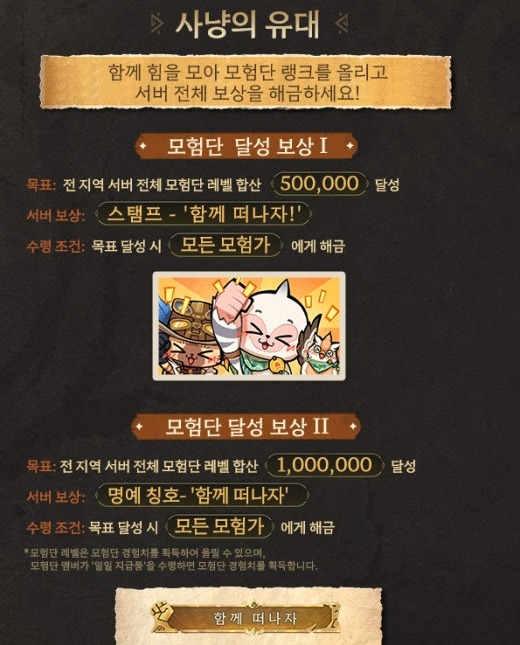
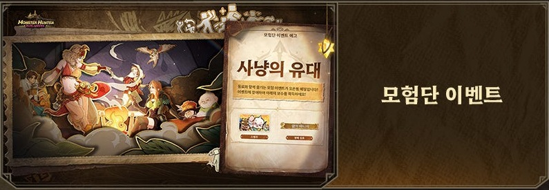
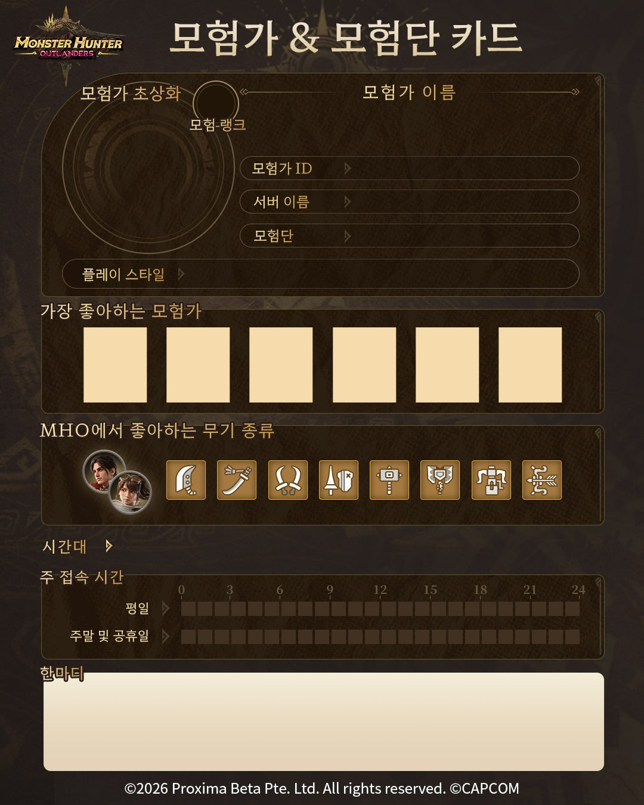

몬스터헌터 아웃랜더스 사냥의 유대 보상, 한국 공지엔 친구 초대 없어요
몬스터헌터 아웃랜더스를 시작하신 분들이라면 공지에서 '사냥의 유대'라는 이름을 한 번쯤 보셨을 텐데요, 이름만 봐서는 뭘 해야 하는지 감이 안 오잖아요. 공식 공지와 안내 이미지를 읽고 정리해 봤어요. 결론부터 말씀드리면 한국 서버 공지·FAQ·안내 이미지에는 친구 초대도 초대 보상도 없고, 참여 방식은 모험단 결성과 가입이에요. 사냥의 유대는 전 지역 서버의 모험단 레벨을 합산해 목표를 채우면 모든 모험가에게 보상이 풀리는 이벤트이고, 기간은 11월 30일 23시 59분까지예요. 나 혼자 열심히 한다고 끝나는 구조가 아니라서, 목표와 보상부터 차근차근 풀어 볼게요.

공식 안내 이미지에서 '사냥의 유대' 칸만 잘라 왔어요. 목표 수치와 보상, 수령 조건이 한 장에 모여 있고, 가운데 카드가 스탬프 그림, 맨 아래가 칭호 명판이에요
이미지 출처: 몬스터헌터 아웃랜더스 공식 네이버 라운지
사냥의 유대는 어떤 목표를 채우면 무엇을 받나요?
목표는 두 단계이고, 합산 레벨이 50만에 닿으면 스탬프 '함께 떠나자!', 100만에 닿으면 명예 칭호 '함께 떠나자'가 모든 모험가에게 해금돼요. 아래 표는 안내 이미지에 적힌 이름 그대로 옮겼어요.
| 단계 | 목표 | 보상 | 수령 조건 |
|---|---|---|---|
| 달성 보상 I | 전 지역 서버 전체 모험단 레벨 합산 500,000 | 스탬프 '함께 떠나자!' | 목표 달성 시 모든 모험가에게 해금 |
| 달성 보상 II | 전 지역 서버 전체 모험단 레벨 합산 1,000,000 | 명예 칭호 '함께 떠나자' | 목표 달성 시 모든 모험가에게 해금 |
안내 이미지에서 같이 눈여겨볼 내용은 이 정도예요.
- '사냥의 유대' 칸 맨 위 문구는 '함께 힘을 모아 모험단 랭크를 올리고 서버 전체 보상을 해금하세요!'예요.
- 기간은 10월 29일(목)부터 11월 30일(월) 23시 59분(UTC+9)까지예요.
사냥의 유대는 어떻게 참여하나요?
공식 안내 이미지가 밝힌 방법은 하나로, 모험단 멤버가 '일일 지급품'을 수령하면 모험단 경험치가 쌓여 모험단 레벨이 올라요. 순서로 풀면 이렇습니다.
- 든든한 동료와 모험단을 결성하거나 가입해요.
- 모험단 멤버가 '일일 지급품'을 수령해요.
- 모험단 경험치를 얻어 모험단 레벨이 올라요.
- 모든 모험단의 레벨 합산이 목표에 닿으면 보상이 열려요.

공식 방송 슬라이드 속 예고 화면이에요. 실제 인게임 화면과는 다를 수 있어요
이미지 출처: 몬스터헌터 아웃랜더스 공식 네이버 라운지
사냥의 유대, 친구 초대 행사가 맞나요?
한국 서버 공식 안내가 밝힌 참여 방식은 모험단 결성과 가입이고, 친구 초대로 보상을 받는다는 문구나 초대 코드, 초대한 사람에게 따로 주는 보상은 공식 공지·FAQ·안내 이미지 어디에도 없어요. 공지 본문도 '든든한 동료와 모험단을 결성하고 함께 사냥을 떠나보세요'라고 권하고, 목표 수치도 개인이 아니라 모험단 레벨의 합산이라 '내가 몇 명을 불렀나'는 기준이 아니랍니다.
그런데 경향게임스는 출시 기사에서 사냥의 유대를 '친구 초대 행사'라고 소개했고, 가레나 보도자료 요약 줄에도 '친구 초대 이벤트'가 11월 30일까지, 목표 달성 시 한정 칭호·스탬프와 이어 적혀 있어요. 두 곳 모두 사냥의 유대 문장과 맞붙어 있는데, 이게 사냥의 유대와 별개의 행사인지 사냥의 유대를 줄여 쓴 건지는 공식 확인이 안 돼요.
참고로 글로벌 공식 사이트에는 사냥의 유대와 별도로 'Buddy Squad Investigation Notes'라는 웹 이벤트가 있고, 여기에는 친구를 초대하면 조사 횟수와 뽑기 횟수를 더 주는 미션이 있어요. 다만 이 페이지에는 보상 서버가 북미·일본·유럽으로 안내돼 있고, 언어 선택 메뉴에는 영어·일본어·프랑스어·독일어가 있어요. 한국 서버는 그 목록에 없어요. 공식 이벤트 페이지에서 확인할 수 있어요.
친구와 같이 사냥하고 싶다면 서버부터 맞춰야 해요. 공식 정식 오픈 FAQ는 지역 간 서버에서 파티 구성과 친구 추가를 지원하지 않는다며, 친구와 함께하려면 같은 서버에서 캐릭터를 만들라고 안내하거든요.
함께 도는 이벤트는 또 뭐가 있나요?
사냥의 유대 말고도 모험단과 관련해 안내된 이벤트 4개와 친구와 파티를 짜는 이벤트 1개가 더 있고, 그중 종료일이 날짜로 적힌 건 11월 13일(금) 04:59까지인 협동 서클뿐이에요. 카드 자랑·모집 응원·섬의 순간들은 공식 안내 이미지에 사냥의 유대와 함께 소개돼 있고, 전진하라, 모험단!과 협동 서클은 인게임 이벤트 공지에 올라 있어요.
| 이벤트 | 기간 | 내용 |
|---|---|---|
| 전진하라, 모험단! | 정식 오픈 후 ~ 별도 공지 시까지 | 모험단에 가입해 퀘스트를 클리어하면 보수. 가입하면 시작의 장·탐색의 시작 시리즈 퀘스트가 열리고, '집결'·'전진'·'원정'은 각각 1일차·3일차·5일차에 개방 |
| 모험단 카드 자랑 | 10월 29일 시작 | 모험가 카드를 작성해 SNS에 공유 |
| 모험단 모집 응원 | 안내 이미지에 10월 30일(금) | 모험단을 결성하고 공식 디스코드의 커뮤니티 퀘스트를 완료하면 보상 기회 |
| 아이솔레시아 섬의 순간들 | - | 모험단원과 함께한 순간을 공유하고 보상 획득 |
| 협동 서클(친구와 파티를 짜는 인게임 이벤트) | ~ 11월 13일(금) 04:59 | 친구와 파티를 짜고 미션을 완료해 협동 포인트를 모으면 루타 코인·스탬프 '집합!'·제스처 '하트'·육성 소재 등을 받아요 |
협동 서클은 11월 13일 04:59에 끝나니, 그 뒤에 이 글을 보셨다면 이미 종료된 이벤트예요. 모험단 모집 응원과 섬의 순간들은 정확한 시작 일정을 아직 알 수 없어요.
모험단 카드는 공식이 SNS 공유용으로 올린 양식인데요, 칸 구성은 이래요.
- 모험가 정보
- 서버 이름과 모험단 이름
- 플레이 스타일
- 좋아하는 모험가 6칸
- 선호 무기
- 주 접속 시간대
- 한마디
공식은 공유하라고만 했지만 제가 보기엔 같이 사냥할 모험단을 구할 때 소개서로 쓰기 좋아 보이네요.

공식이 올린 모험단 카드 빈 양식이에요
이미지 출처: 몬스터헌터 아웃랜더스 공식 네이버 라운지
자주 묻는 질문
Q. 게임의 일일 초기화는 몇 시인가요?
공식 FAQ가 안내한 게임의 일일 초기화는 매일 오전 5시(서버 시간)이고, 협동 서클의 일일 미션도 같은 5시에 초기화돼요.
Q. 협동 서클 파티는 중간에 바꿔도 되나요?
파티는 3회까지 자유롭게 바꿀 수 있는데요, 그 뒤로는 파티에서 나갈 때마다 2시간이 지나야 새 파티에 들어갈 수 있고, 이미 열린 보수 진행도는 멤버가 바뀌거나 나가도 그대로 남아요.
몬스터헌터 아웃랜더스 사냥의 유대 정리
지금 공지에 나온 건 목표와 보상, 기간, 레벨 올리는 방법까지고요, 아래 네 가지는 공지와 안내 이미지에는 아직 없어요. 이벤트 상세는 게임 안 이벤트 센터에서 보라는 게 공식 안내예요. 공지에는 '추후 다른 커뮤니티 이벤트도 진행 예정'이라는 말도 있어서, 모험단 관련 이벤트는 더 늘어날 수도 있겠네요.
- 지금까지 쌓인 합산 진행도(50만·100만 중 어디쯤인지)
- 일일 지급품의 구성, 한 번 받을 때 오르는 경험치, 갱신되는 시각
- 스탬프와 칭호를 받는 경로(안내 이미지는 '해금', 공지 본문은 '지급합니다'로 적혀 있어요)
- 모험단 가입 방법과 조건
마감까지 시간은 넉넉한 편이니, 모험단부터 꾸려 두고 일일 지급품 챙기면서 다 같이 달려 보면 좋겠네요~
참고한 곳 (2026.11.01 기준)
· 정식 오픈 기념 모험단 '사냥의 유대' 이벤트 예고 안내(공식 네이버 라운지)
· 신규 인게임 이벤트 안내(공식 네이버 라운지)
· Buddy Squad Investigation Notes(몬스터헌터 아웃랜더스 글로벌 공식 사이트 웹 이벤트)